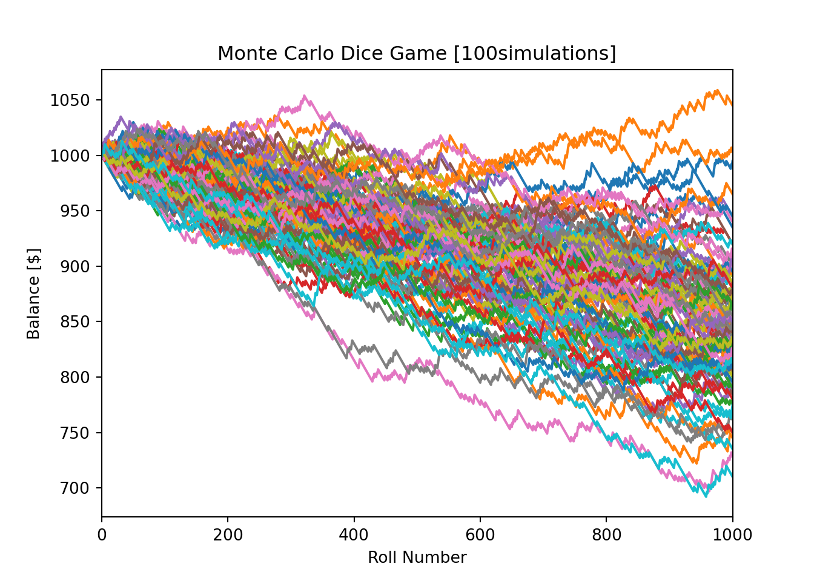

What is a Monte Carlo Simulation?
A Monte Carlo simulation is a type of computational algorithm that estimates the probability of occurrence of an undeterminable event due to the involvement of random variables. The algorithm relies on repeated random sampling in an attempt to determine the probability. This means simulating an event with random inputs a large number of times to obtain your estimation. You can determine other factors as well, and we will see that in the example. Monte Carlo simulations can be utilized in a broad range of fields spanning from economics, gambling, engineering, energy, and anything in-between. So, no matter what career field you are in, it’s an excellent thing to know about.
#The Dice Game
Our simple game will involve two six-sided dice. In order to win, the player needs to roll the same number on both dice. A six-sided die has six possible outcomes (1, 2, 3, 4, 5, and 6). With two dice, there is now 36 possible outcomes (1 and 1, 1 and 2, 1 and 3, etc., or 6 x 6 = 36 possibilities). In this game, the house has more opportunities to win (30 outcomes vs. the player’s 6 outcomes), meaning the house has the quite the advantage.
Let’s say our player starts with a balance of $1,000 and is prepared to lose it all, so they bet $1 on every roll (meaning both dice are rolled) and decide to play 1,000 rolls. Because the house is so generous, they offer to payout 4 times the player’s bet when the player wins. For example, if the player wins the first roll, their balance increases by $4, and they end the round with a balance of $1,004. If they miraculously went on a 1,000 roll win-streak, they could go home with $5,000. If they lost every round, they could go home with nothing. Not a bad risk-reward ratio… or maybe it is.
Dice Roll Function
Let’s define a function that will randomize an integer from 1 to 6 for both dice (simulating a roll). The function will also compare the two dice to see if they are the same. The function will return a Boolean variable, same_num, to store if the rolls are the same or not. We will use this value later to determine actions in our code.
These are initialized as lists and will be updated at the end of each game.
Show the code
(0.0, 1000.0)Once the number of rolls hits 1,000, we can calculate the player’s win probability as the number of wins divided by the total number of rolls. We can also store the ending balance for the completed game in the tracking variable end_balance. Finally, we can plot the num_rolls and balance variables to add a line to the figure we defined earlier.
Monte Carlo Simulation
Show the code
# For loop to run for the number of simulations desired
for i in range(num_simulations):
balance = [1000]
num_rolls = [0]
num_wins = 0 # Run until the player has rolled 1,000 times
while num_rolls[-1] < max_num_rolls:
same = roll_dice() # Result if the dice are the same number
if same:
balance.append(balance[-1] + 4 * bet)
num_wins += 1
# Result if the dice are different numbers
else:
balance.append(balance[-1] - bet)
num_rolls.append(num_rolls[-1] + 1)# Store tracking variables and add line to figure
win_probability.append(num_wins/num_rolls[-1])
end_balance.append(balance[-1])
plt.plot(num_rolls, balance)
The last step is displaying meaningful data from our tracking variables. We can display our figure (shown below) that we created in our for loop. Also, we can calculate and display (shown below) our overall win probability and ending balance by averaging our win_probability and end_balance lists.
Show the code
Average win probability after 100runs: 0.16773999999999997Show the code
Average ending balance after 100runs: $838.7Analyzing Results
The most important part of any Monte Carlo simulation (or any analysis for that matter) is drawing conclusions from the results. From our figure, we can determine that the player rarely makes a profit after 1,000 rolls. In fact, the average ending balance of our 10,000 simulations is $833.66 (your results may be slightly different due to randomization). So, even though the house was “generous” in paying out 4 times our bet when the player won, the house still came out on top.
We also notice that our win probability is about 0.1667, or approximately 1/6. Let’s think about why that might be. Returning back to one of the earlier paragraphs, we noted that the player had 6 outcomes in which they could win. We also noted there are 36 possible rolls. Using these two numbers, we would expect that the player would win 6 out of 36 rolls, or 1/6 rolls, which matches our Monte Carlo prediction. Pretty cool!